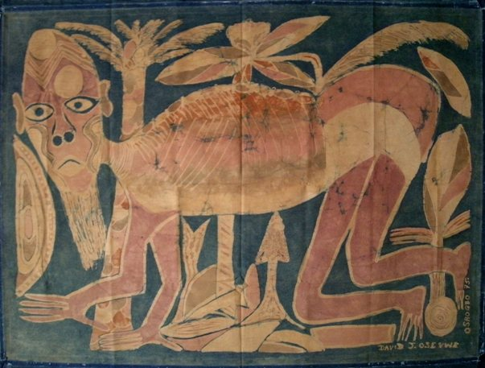

David Osevwe
B. 1948
Artist Biography
David Osevwe was born in Osun State, Nigeria. In 1964 he went to Osogbo, joining the Duro Lapido National Theatre as a lighting technician and actor, before taking part in 1965 in Georgina Beier’s art and printing workshop. As one of the first generation Osogbo artists, Osevwe began working in beads, batik, oil painting and various printing techniques. A member of the Society of Nigerian Artists, he was influenced most by Jimoh Buraimoh and Bruce Onobrakpeya. Over a long career that included teaching and being President of the Osogbo Artists Cooperative, he exhibited extensively in Nigeria but also won international awards and was shown in the United States, London, Berlin, Denmark and elsewhere. He had solo exhibitions at the Goethe Institute in Lagos in 1975 and 1982 and at the Africa Centre in London, UK in 1988. Group exhibitions included the World Arts Exhibition at Capri, Italy in 1967 and the 1977 FESTAC ’77 in Lagos, and an exhibition on Osogbo art at the Museum of African Art in Belgrade in 1988. The Mayor’s Office in Washington D.C. bought one of his paintings and Osevwe’s work is held both in American university collections and in numerous Nigerian public collections, including the National Museum in Lagos.

Untitled, 1975